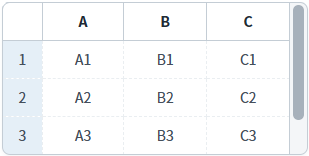
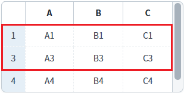
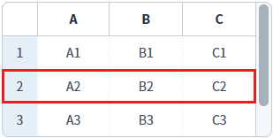
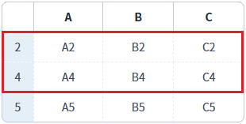
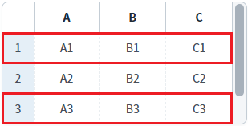

GridView의 'setRowVisible' 메소드와 'clearRowVisible' 메소드를 사용하여 특정 행의 숨김 여부을 설정한 예제입니다.
다음은 메소드별 설명입니다.
setRowVisible: 특정 행의 숨김 여부를 설정
clearRowVisible: 숨김 처리한 행을 모두 표시
특정 행 숨기기/보이기
숨겨진 행 모두 취소하기(보이기)
1
STEP 1: 초기 상태 확인하기
GridView의 모든 행이 표시된 상태입니다.
Image 1.브라우저(Chrome) 실행 예시

2
STEP 2: 특정 행을 숨기기
'2번째 행을 숨기기' 버튼을 클릭합니다.
3
STEP 3: 실행 결과를 확인합니다.
2번째 행이 표시되지 않습니다.
Image 2.브라우저(Chrome) 실행 예시

4
STEP 4: 특정 행을 표시하기
'2번째 행을 표시하기' 버튼을 클릭합니다.
5
STEP 5: 실행 결과를 확인합니다.
2번째 행이 표시됩니다.
Image 3.브라우저(Chrome) 실행 예시

1
STEP 1: 초기 상태 확인하기
GridView의 모든 행이 표시된 상태입니다.
Image 4.브라우저(Chrome) 실행 예시
2
STEP 2: 특정 행들을 숨김 설정하기
'1번째, 3번째 행을 숨기기' 버튼을 클릭합니다.
3
STEP 3: 실행 결과를 확인합니다.
1번째, 3번째 행이 표시되지 않습니다.
Image 5.브라우저(Chrome) 실행 예시

4
STEP 4: 숨겨진 행 모두 표시하기
'숨겨진 행 모두 취소하기' 버튼을 클릭합니다.
5
STEP 5: 실행 결과를 확인합니다.
숨겨진 행이 모두 표시됩니다.
Image 6.브라우저(Chrome) 실행 예시

1
스크립트를 작성합니다.
GridView의 'setRowVisible' 메소드를 사용합니다.
Example 1.Script
//예제 파일의 스크립트 "scwin.btn_ex1_onclick" 또는 "scwin.btn_ex2_onclick"를 참고하세요. //GridView 'grd_exam1'의 2번째 행을 숨기기 grd_exam1.setRowVisible(1, false); //GridView 'grd_exam1'의 2번째 행을 표시하기 grd_exam1.setRowVisible(1, true);
1
스크립트를 작성합니다.
GridView의 'clearRowVisible' 메소드를 사용합니다.
Example 2.Script
//예제 파일의 스크립트 "scwin.btn_ex4_onclick"을 참고하세요. //GridView 'grd_exam1'의 숨겨진 행 모두 취소하기 grd_exam1.clearRowVisible();
setRowVisible( rowIndex , flag )
clearRowVisible( )